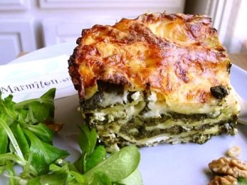

Lasagnes chèvre épinards
Ingredients
4×
- plaques de lasagnes
- 800 g d'épinards
- 400 g de bûche de chèvre émiettée
- béchamel (50cl de lait)
- sel
- poivre
- gruyère râpé

Préparation
Étape 1
Beurrer un plat. Alterner 2 à 3 fois plaques de lasagnes, 800 g d'épinards, 400 g de bûche de chèvre émiettée, béchamel (50cl de lait), sel et poivre. Finir par la béchamel et saupoudrer de gruyère râpé.
Étape 2
Cuire 30min à 200ºC.
Conseils
- On peut aussi mélanger le chèvre et les épinards à la béchamel.